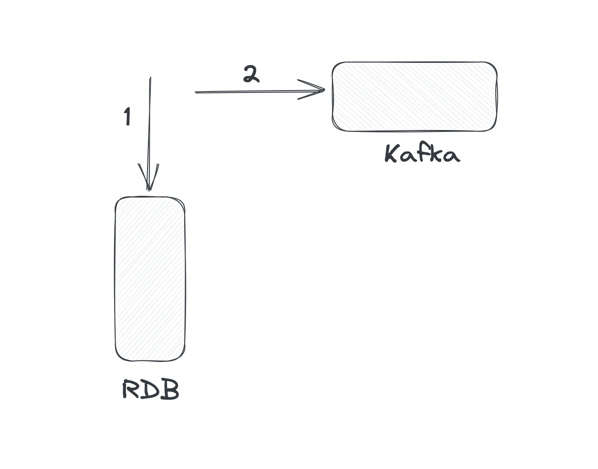

Challenges of Distributed Systems
Grzegorz Piwowarek
@pivovarit
{ 4comprehension.com }
WarsawJUG | Vavr | Oracle ACE
Independent Consultant/Trainer
distributed systems | microservices | async | reactive | java@pivovarit
What makes systems...distributed?
CAP Theorem
- Consistency
- Availability
- Partition tolerance
Consistency
every read receives the most recent write
(a single-copy illusion)Availability
every request receives a non-error response
(even if some nodes are down)Partition tolerance
system continues to operate even if network links are lost
distributed systems are systems that communicate over unreliable channels
Rule: In the presence of a network partition, a distributed system must choose either Consistency or Availability.
...

 https://twitter.com/ddprrt/status/1425418538257428488
https://twitter.com/ddprrt/status/1425418538257428488
 https://twitter.com/ddprrt/status/1425418538257428488
https://twitter.com/ddprrt/status/1425418538257428488

"It was the invention of the null reference in 1965...I call it my billion-dollar mistake."Tony Hoare

Another "billion-dollar mistake":
Microservices
Another "billion-dollar mistake":
"Micro"
Microservice vs service?
How small is "micro"?
N lines of code?
N endpoints?
N classes?
N MBs?
N responsibilities?
Rewritable in X time?
Microservices: the Main Idea
Enable scalability through independence and modularity
Tight coupling - Low cohesion

source: https://enterprisecraftsmanship.com/posts/cohesion-coupling-difference/
Low coupling - High cohesion

source: https://enterprisecraftsmanship.com/posts/cohesion-coupling-difference/
You can have modularity without microservices
 Naturally, you don't get all the benefits, but it's not a demanding
investment
Naturally, you don't get all the benefits, but it's not a demanding
investment

"The smaller the service, the more you maximize the benefits and downsides of microservice architecture."Sam Newman

author: Bruce Wong
Netflix: 2000 engineers

However, don't be fooled by the size of those microservices, because a lot of those so-called microservices at Netflix are a lot larger, just looking at the code base, than the big monoliths that I've worked at, at many other companies.Paul Bakker
source: https://www.infoq.com/presentations/netflix-java/
Do not ask about the max size, but when to split
So... when do we split?
When it hurts too much
The #1 rule of distributed systems: don't do it until you have to

The Pragmatic Default

https://twitter.com/dhh/status/1247522358908215296
Our server app is a monolith, one big codebase of several million lines and a few thousand Django endpoints [1], all loaded up and served together. A few services have been split out of the monolith, but we don’t have any plans to aggressively break it up.https://instagram-engineering.com/static-analysis-at-scale-an-instagram-story-8f498ab71a0c
Reliability in an unreliable world
When sending a message over unreliable channels, how to guarantee delivery?
(...thought experiment...)
Definition
An operation is idempotent if performing it multiple times produces the same effect as performing it once.
f(f(x)) = f(x)Examples
- Setting a user’s status to “active” → ✅
- Incrementing a counter → ❌
In a distributed system
Failures and retries are inevitable.
- Network retries may cause duplicate requests
- Clients or load balancers might resend operations
- Idempotency prevents unwanted side effects
Exactly-once delivery?
A fairy tale.
Reality: You only ever get:
- at-most-once → messages may be lost
- at-least-once → messages may be duplicated
Exactly-once doesn’t exist
- Networks can fail between send and acknowledge
- Clients can retry
- Servers can crash mid-processing
Exactly-once effect
We can’t guarantee exactly-once delivery,
but we can design for exactly-once effect using idempotency.
at-least-once delivery + idempotency = exactly-oncePACELC Theorem
Daniel Abadi extended CAP to include trade-offs when no partition occurs:
If P (partition) → A or C
Else (ok) → Latency or Consistency
Even without partitions, there’s another trade-off
Waiting for consensus takes timeThis is the “ELC” part of PACELC.
Imagine two coffee shops sharing an order system
- network failure → choice: keep taking orders (A) or pause until synced (C)
- no failure → each order can be: fast but maybe outdated (L) or slow but always accurate (C)
Real-world examples
- Amazon Dynamo / Cassandra → prioritize Availability + Low Latency
- Google Spanner → prioritize Consistency, accept more latency
temporal coupling
when all your services need to responsive at the same time
False Dichotomy:
Consistent vs. Inconsistent
Different consistency levels
- Strong consistency → Data converges immediately
- Eventual consistency → Data converges... eventually
- Accidental consistency → Data converges... maybe
All are “consistent” — just in different ways.
Eventual consistency
If no new updates occur, all replicas will eventually converge to the same state.
It’s a trade-off: we get availability and speed at the cost of temporary disagreement.
Why this makes sense
- Networks are slow and unreliable
- Waiting for everyone to agree slows everything down
- So we let nodes respond now and sync later
→ Fast now, consistent later
synchronous communication

asynchronous communication

From HTTP calls...
OrderService -> PaymentService -> NotificationService
Each service calls another directly...
...tight coupling, dependencies, and failure chains.
...to Events
OrderService --> publishes OrderCreatedEvent
PaymentService --> consumes OrderCreatedEvent
NotificationService --> consumes PaymentConfirmedEvent
Services react to events instead of making direct calls.
Local Read Models
Each service maintains its own local view of data it needs.
@EventListener
void on(PaymentConfirmedEvent event) {
orderReadModel.updateStatus(event.orderId(), "PAID");
}
This enables fast, local reads - no cross-service queries needed
...but it eventually consistent
Why Local Read Models?
- No need to call other services for data
- Improves reliability - service can operate even if others are down
Time

var first = Instant.now();
var second = Instant.now();
first <= second?
A monotonic clock always moves forward - never backward.
But most system clocks are not monotonic.
Why clocks go backwards
- NTP (Network Time Protocol) adjustment
- Virtual machines paused and resumed
- Leap seconds
- Manual time correction by an admin
Monotonic clocks to the rescue
- In Java:
System.nanoTime() - In Linux:
CLOCK_MONOTONIC
They never go backward, but don’t represent “real” time.
Measuring time: from Java to kernel and back
In distributed systems, time is… an illusion.
The problem with clocks
- Each machine has its own clock
- Clocks drift - even if synced
- Network delays make “now” ambiguous
So: there is no single, global “current time.”
Example
Two servers record an event:
- Server A: event at 12:00:00.100
- Server B: event at 12:00:00.090
Which happened first? 🤔
Why this matters
- Event ordering affects state changes
- Conflicts appear when we can’t tell “what came first”
- Replication, logs, and causality all depend on time
Happened-before relationship
Instead of wall-clock time, we use causal order:
A → B if A happened before B (causally)
We care about ordering of events, not their timestamps.
Logical clocks
- Lamport clocks → simple counters to track causal order
- Vector clocks → richer structure to detect concurrent events
They don’t measure real time - they measure cause and effect.
Real time vs. logical time
- Real time → what your watch shows
- Logical time → what the system can prove happened first
Distributed systems live in logical time.
Google’s Spanner uses special hardware clocks (TrueTime API) ⏱️
But even then, they include an uncertainty window - because perfect time doesn’t exist.
Summary
- Each node has its own imperfect sense of time
- We can’t rely on timestamps for ordering
- We use logical or causal time to reason safely
Time is relative - especially in distributed systems 🌌
Eventual Consistency != Accidental Consistency


@Transactional
public void createUser(CreateUserCommand command) {
var user = from(command);
persist(user); // 1
send(UserCreatedEvent.from(user)); // 2
}
@Transactional won't save you in the distributed world
Dual-Write (distributed transaction)
Singe-Write with async propagation

Transactional Outbox Pattern
Change Data Capture
Using common sense is the ultimate Best Practice™.